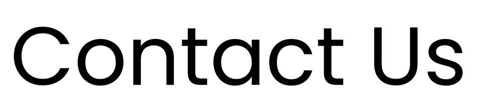
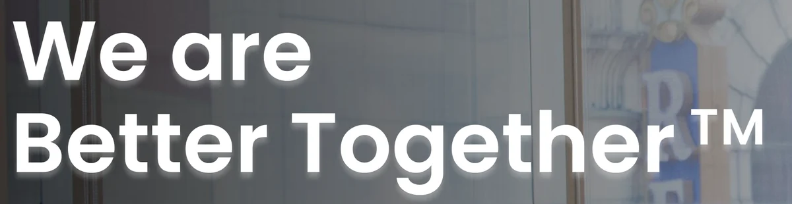

Type, as measured

82.5 pxHeading inside the contact card. Light weight.
64 pxHero headline. Bold, white on the photo.Sizes are measured from the design at 1920 px wide. The samples are cut from the page and shown at 75% of that size, all to the same scale. Both paragraphs are justified, which is why their word gaps are uneven. A second, plainer sans appears only in small text such as the contact strip.